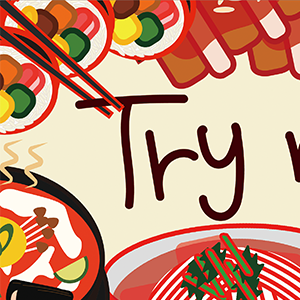
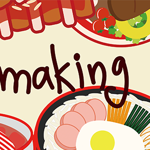
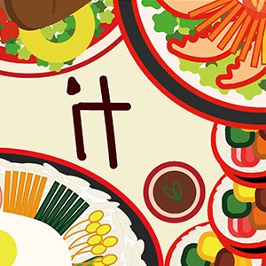

Introduce



Try making it은 '홈메이드 레시피' 라는 주제로
집에서 누구나 쉽게 해 먹을 수 있을 법한 메뉴들을 선정하고 이를 일러스트로 담아냅니다.
흔한 레시피 정보와는 차별화된 전달 방식으로 먹음직스러운 일러스트가 함께 합니다.
식욕 자극 사진 없이도, 거창한 레시피 없이도 해 먹어보고픈 맛집에 여러분들을 초대합니다.
오늘도 익숙하고 친근한 메뉴들로 구성했습니다.
어떤 메뉴가 끌리시나요?
Try making it!
집에서 누구나 쉽게 해 먹을 수 있을 법한 메뉴들을 선정하고 이를 일러스트로 담아냅니다.
흔한 레시피 정보와는 차별화된 전달 방식으로 먹음직스러운 일러스트가 함께 합니다.
식욕 자극 사진 없이도, 거창한 레시피 없이도 해 먹어보고픈 맛집에 여러분들을 초대합니다.
오늘도 익숙하고 친근한 메뉴들로 구성했습니다.
어떤 메뉴가 끌리시나요?
Try making it!